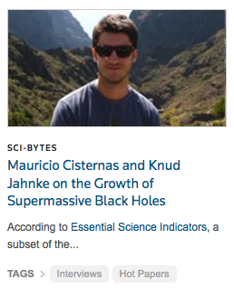
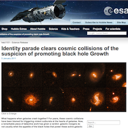

Dr. Mauricio Cisternas
Data Scientist | Astrophysicist

Data Scientist | Astrophysicist

|  |
Featured Article and InterviewAccording to Thomson Reuters' citation metrics, my paper on the (lack of a) relation between galaxy mergers and the triggering of active galactic nuclei was the most cited paper in its field over a period during early 2012, for which it was designated a "Fast Breaking Paper in Space Science". For this reason, we were interviewed by ScienceWatch to talk about our work and its implications.Read more: Press Article |
ESA/Hubble Press ReleaseIn collaboration with the European Space Agency and the Max Planck Institute for Astronomy, a press release was produced to accompany the publication of my 2011 paper on galaxy mergers and black hole growth. This was a great chance to share our work and discoveries with the general public. This release was also picked by several other media which increased its exposure and its diffusion in multiple languages.Press Release by: Hubble, ESA, and MPIA Media exposure: Wired - Space.com - Science - Astronomy Now - ars technica - Yahoo! News - Universe Today - Astronomy Magazine - PhysOrg - Science Daily - El País (Español) - Le Scienze (Italiano) - Astronews (Deutsch) - scientias.nl (Dutch) - Ehime University (Japanese) - astron.ac.cn (Chinese) |
 |